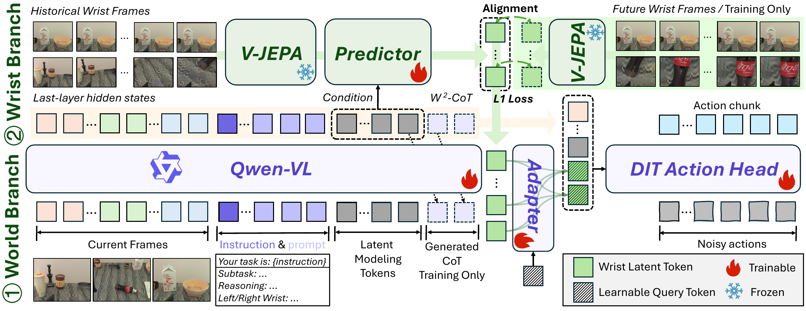
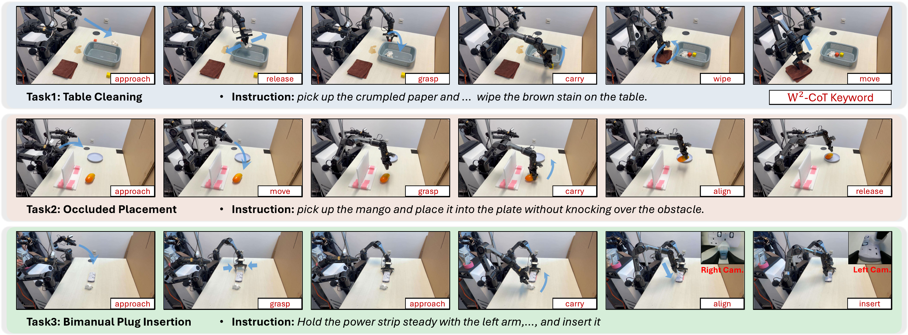
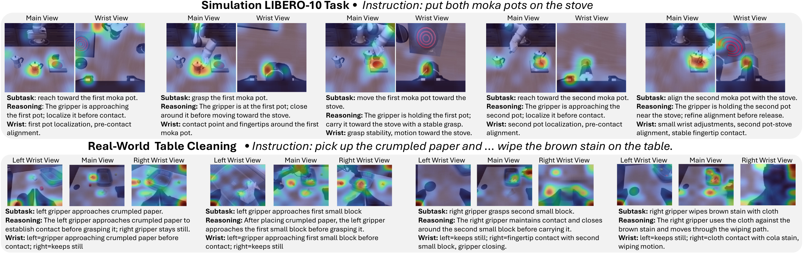

Directional modeling
Global world context is explicitly routed toward wrist-local dynamics.
W²-VLA turns global task understanding into action-proximal foresight by predicting future wrist latents from a compact, task-conditioned interface and wrist history.
Vision-language-action (VLA) models often treat main-view and wrist-view observations as parallel visual inputs, overlooking their distinct roles in robot manipulation. Fine-grained manipulation, however, benefits from anticipating how wrist-local interactions may evolve under the global task context. To address this limitation, we present World-to-Wrist VLA (W²-VLA), a VLA model for fine-grained robot manipulation with task-conditioned future wrist modeling. Given current multi-view observations and an instruction, W²-VLA contextualizes a set of latent modeling tokens as a compact interface between the VLM and the wrist predictor. Conditioned on this interface and wrist history, the wrist predictor forecasts future wrist latents, which are converted into future-aware context for action prediction. In addition, we propose W²-CoT, a synthesis pipeline that produces structured annotations for manipulation progress, physical transition cues, and wrist-local evidence. These structured annotations provide auxiliary supervision to help shape the task-conditioned latent interface. Experiments on LIBERO, RoboTwin 2.0, and real-world manipulation tasks demonstrate improved fine-grained and contact-sensitive manipulation across single-arm and bimanual settings, while maintaining real-time action-generation above 80 Hz.
Global world context is explicitly routed toward wrist-local dynamics.
Future wrist representations capture contact, alignment, and release.
A fixed-length latent interface avoids explicit CoT generation at deployment.

Current multi-view observations and language contextualize 16 latent modeling tokens inside Qwen-VL.
Frozen V-JEPA wrist-history features are queried by task-conditioned states to forecast local future latents.
A lightweight adapter fuses the predicted wrist context with VLM states for flow-matching action generation.


@article{w2vla_placeholder,
title = {World-to-Wrist: Task-Conditioned Future Wrist Modeling for Fine-Grained Robot Manipulation},
author = {Author list to be updated},
journal = {Venue to be updated},
year = {2027}
}